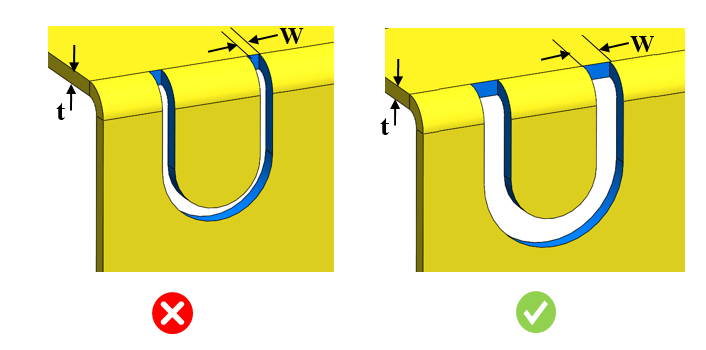
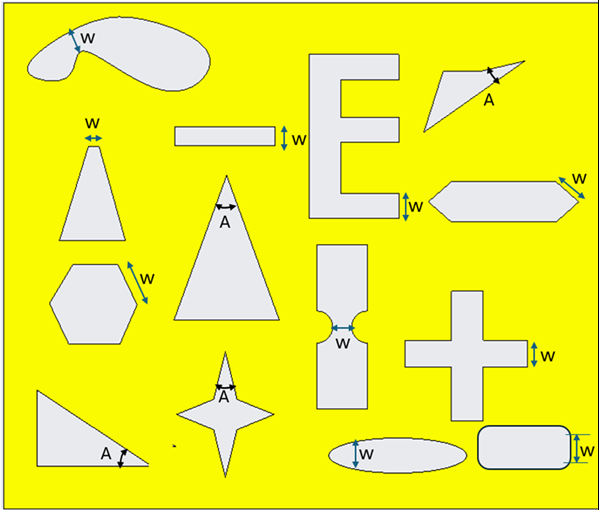

切り欠きの最小幅と板厚の比は、ユーザーが指定した値以上である必要があります。
切り欠き幅が小さいと、細いパンチが必要となり望ましくありません。金型のパンチが過度に薄く脆くなるのを防ぎ、十分な強度を保って変形に耐えられるようにするため、適切な幅を確保する必要があります。
一般的なガイドラインとして、切り欠き幅と板厚の比は >=1.5 とすることが推奨されます。
ユーザーは、切り欠きの最小幅と板厚の比を設定し、指定した角度の鋭角コーナーを検出するように構成できます。
ルールUIでは、材料の一覧は 材料マップ から読み込まれ、ユーザーは材料およびその値を設定できます。
材料とその値を設定した後、ユーザーは Ctrl+M コマンドを使用して、ルールUIで材料グループおよびグレードを含む設定済み材料の一覧をフィルタして表示できます。同じキー（Ctrl+M）でフィルタをリセットします。


通常の切り欠き

不規則な切り欠き
ここでは、
t = 板厚
W = 切り欠きの幅
A = 鋭角コーナー角度
注記:
面取りされた切り欠きはサポートされていません。
上記のヘルプ画像に示す不規則な切り欠きについては、ルールはまず鋭角コーナー（A）のケースをチェックし、これが合格した場合に、次に切り欠きの最小幅をチェックします。
最小幅は、側面幅の最小値、または隣接していない面同士の間の内部幅の最小値に基づいて算出されます。
ヘルプ画像に示すように、曲げ部にある切り欠きはサポートされます。曲げ部上に存在する不規則な切り欠きはサポートされません。